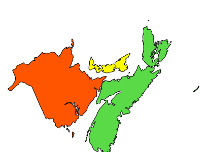

Union Layer¶
- Author:
Tamas Szekeres
- Contact:
szekerest at gmail.com
- Author:
Jeff McKenna
- Contact:
jmckenna at gatewaygeomatics.com
- Last Updated:
2026-03-29
Description¶
Since version 6.0, MapServer has the ability to display features from multiple vector layers (called ‘source layers’) in a single mapfile layer. This feature was added through MS RFC 68: Support for combining features from multiple layers. Raster layers cannot be combined using this feature.
Requirements¶
This is a native MapServer option that doesn’t use any external libraries to support it.
Mapfile Configuration¶
The CONNECTIONTYPE parameter must be set to UNION.
The CONNECTION parameter must contain a comma separated list of the source layer names.
All of the source layers and the union layer must be the same TYPE (e.g. all must be TYPE POINT, or all TYPE POLYGON etc.)
Note
You may wish to disable the visibility (change their STATUS) of the source layers to avoid displaying the features twice.
For example:
LAYER
NAME "union-layer"
TYPE POINT
STATUS DEFAULT
CONNECTIONTYPE UNION
CONNECTION "layer1,layer2,layer3" # reference to the source layers
PROCESSING "ITEMS=itemname1,itemname2,itemname3"
...
END
LAYER
NAME "layer1"
TYPE POINT
STATUS OFF
CONNECTIONTYPE OGR
CONNECTION ...
...
END
LAYER
NAME "layer2"
TYPE POINT
STATUS OFF
CONNECTIONTYPE OGR
CONNECTION ...
...
END
LAYER
NAME "layer3"
TYPE POINT
STATUS OFF
CONNECTIONTYPE OGR
CONNECTION ...
...
END
Feature attributes¶
In the LAYER definition you may refer to any attributes supported by each of the source layers. In addition to the source layer attributes the union layer provides the following additional attributes:
Union_SourceLayerName - The name of the source layer the feature belongs to
Union_SourceLayerGroup - The group of the source layer the feature belongs to
During the selection / feature query operations only the ‘Union_SourceLayerName’ and ‘Union_SourceLayerGroup’ attributes are provided by default. The set of the provided attributes can manually be overridden (and further attributes can be exposed) by using the ITEMS processing option (refer to the example above).
Classes and Styles¶
We can define the symbology and labelling for the union layers in the same way as for any other layer by specifying the classes and styles. In addition the STYLEITEM AUTO option is also supported for the union layer, which provides to display the features as specified at the source layers. The source layers may also use the STYLEITEM AUTO setting if the underlying data source provides that.
Projections¶
For speed, it is recommended to always use the same projection for the union layer and source layers. However MapServer will reproject the source layers to the union layer if requested. (for more information on projections in MapServer refer to PROJECTION)
Supported Processing Options¶
The following processing options can be used with the union layers:
- UNION_STATUS_CHECK (TRUE or FALSE)
Controls whether the status of the source layers should be checked and the invisible layers (STATUS=OFF) should be skipped. Default value is FALSE.
- UNION_SCALE_CHECK (TRUE or FALSE)
Controls whether the scale range of the source layers should be checked and the invisible layers (falling outside of the scale range and zoom range) should be skipped. Default value is TRUE.
- UNION_SRCLAYER_CLOSE_CONNECTION
Override the connection pool setting of the source layers. By introducing this setting we alter the current behaviour which is equivalent to:
UNION_SRCLAYER_CLOSE_CONNECTION=ALWAYS
Examples¶
Mapfile Example¶
The follow example contains 3 source layers in different formats, and one layer (yellow) in a different projection. The union layer uses the STYLEITEM “AUTO” parameter to draw the styles from the source layers. (in this case MapServer will reproject the yellow features, in EPSG:4326, for the union layer, which is in EPSG:3978).

MAP
...
PROJECTION
"init=epsg:3978"
END
...
LAYER
NAME 'unioned'
TYPE POLYGON
STATUS DEFAULT
CONNECTIONTYPE UNION
CONNECTION "red,green,yellow"
STYLEITEM "AUTO"
# Define an empty class that will be filled at runtime from the color and
# styles read from each source layer.
CLASS
END
PROJECTION
"init=epsg:3978"
END
END
LAYER
NAME 'red'
TYPE POLYGON
STATUS OFF
DATA 'nb.shp'
CLASS
NAME 'red'
STYLE
OUTLINECOLOR 0 0 0
COLOR 255 85 0
END
END
END
LAYER
NAME 'green'
TYPE POLYGON
STATUS OFF
CONNECTIONTYPE OGR
CONNECTION 'ns.mif'
CLASS
NAME 'green'
STYLE
OUTLINECOLOR 0 0 0
COLOR 90 218 71
END
END
END
LAYER
NAME 'yellow'
TYPE POLYGON
STATUS OFF
CONNECTIONTYPE OGR
CONNECTION 'pei.gml'
CLASS
NAME 'yellow'
STYLE
OUTLINECOLOR 0 0 0
COLOR 255 255 0
END
END
PROJECTION
"init=epsg:4326"
END
END
END # Map
PHP MapScript Example¶
<?php
// open map
$oMap = ms_newMapObj( "D:/ms4w/apps/osm/map/osm.map" );
// create union layer
$oLayer = ms_newLayerObj($oMap);
$oLayer->set("name", "unioned");
$oLayer->set("type", MS_LAYER_POLYGON);
$oLayer->set("status", MS_ON);
$oLayer->setConnectionType(MS_UNION);
$oLayer->set("connection", "red,green,yellow");
$oLayer->set("styleitem", "AUTO");
$oLayer->setProjection("init=epsg:3978");
// create empty class
$oClass = ms_newClassObj($oLayer);
...
?>